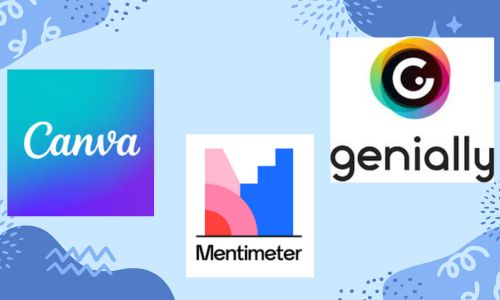

COMO UTILIZAR 3 APLICACIONES TECNOLOGICAS
En la era digital actual, el dominio de las herramientas tecnológicas se ha vuelto esencial tanto en el ámbito educativo como en el profesional. Este proyecto se centra en enseñar a los usuarios cómo utilizar tres aplicaciones populares: Canva, Mentimeter y Genially.
A través de tutoriales interactivos y accesibles, los participantes podrán aprender a crear diseños visuales atractivos con Canva, lo que les permitirá presentar sus ideas de manera impactante. Además, Mentimeter ofrecerá la oportunidad de realizar encuestas en tiempo real, facilitando la interacción y el feedback inmediato durante presentaciones o clases.
Por último, Genially se destaca en la creación de presentaciones interactivas que capturan la atención del público y fomentan un aprendizaje más dinámico. Estas herramientas no solo mejoran la comunicación, sino que también estimulan la creatividad, haciendo que cada proyecto sea único y memorable. Al finalizar este curso, los usuarios estarán equipados con habilidades prácticas que pueden aplicar en diversos contextos, potenciando su capacidad para transmitir ideas de forma efectiva.
A continuacion las aplicaciones a explicar:
